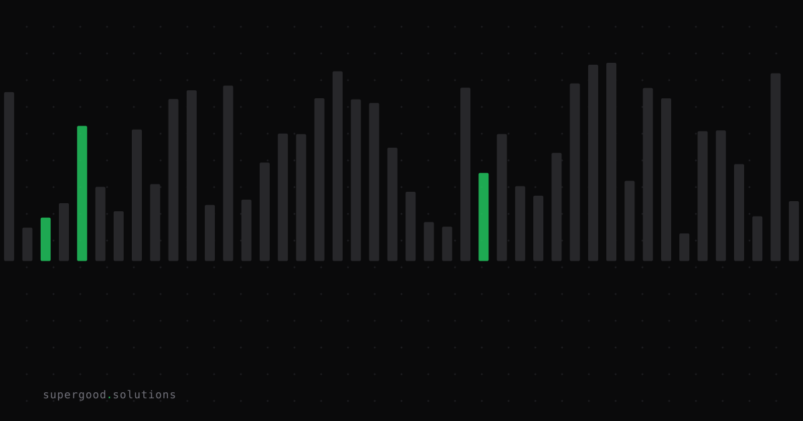

Simulation Data Won't Replace Your Real-World Training Set — It'll Outvote It
TL;DR: Synthetic simulation data has gotten good enough that teams are tempted to swap it in wholesale for real-world data — but the actual research says that's the wrong move. The teams winning with synthetic data aren't replacing real data, they're outnumbering it 9-to-1 and letting the real data anchor the rest.
Key Insight
The industry narrative is "synthetic data replaces real data" — cheaper, faster, no privacy liability, decoupled from slow acquisition cycles. That's half right. Synthetic data has crossed a real quality threshold: Microsoft's Phi-1, trained on roughly one billion synthetic "textbook-quality" tokens, matched or beat models ten times its size on coding benchmarks. Phi-3-mini hit 69% on MMLU at 3.8B parameters, largely on curated synthetic data. Those are not toy results.
But the peer-reviewed literature on model collapse draws a hard line teams keep ignoring: synthetic data works when it accumulates alongside real data, and fails when it replaces real data. Gerstgrasser et al. (2024) showed analytically that test error stays bounded when you keep adding real data into the mix — even a small amount — but grows without bound as synthetic-only training compounds across generations. Separately, researchers running OPT-125m on purely synthetic self-training with zero real data retained watched perplexity degrade by 20-28 points over five epochs. Same technique, opposite outcome, and the only variable was whether real data stayed in the loop.
The contrarian take isn't "avoid synthetic data" — it's "stop treating it as a replacement strategy." It's a multiplier on real data, not a substitute for it.
Why Teams Miss This
Three patterns show up over and over in enterprise deployments:
- They chase the cost story and skip the mixture ratio. Synthetic data is cheap and infinite, so teams generate 10x, 50x, 100x more of it than they have real examples — then quietly let real data become a rounding error in the final mix. The Phi series' own published recipes keep a deliberate slice of curated, real-derived data in every training run; they don't lean on synthetic tokens alone.
- They treat "privacy-safe" as "quality-equivalent." Synthetic data solves a genuine problem — you can't train on regulated customer PII, medical records, or financial transactions without serious liability. But privacy safety and statistical fidelity are different properties. A generator can be perfectly private and still drift from the real distribution it's supposed to mimic, especially on the rare, high-stakes edge cases that matter most (fraud patterns, adverse drug events, rare failure modes).
- They skip eval-set contamination checks. If the same model family that generates your synthetic training data also generates your synthetic eval data, you're grading your own homework. Benchmarks quietly inflate while real-world performance doesn't move.
How to Actually Do It
Four use cases, four different rules — treat synthetic data as a toolkit, not a single lever:
- Fine-tuning / instruction data: Generate freely, but cap the synthetic share and always retain a real-data floor (the "accumulate, don't replace" literature suggests real data should anchor the mix, not just season it — think closer to a fifth of total tokens than a token gesture).
- Eval sets: Never generate evals with the same model or model family you're training. Use a different generator, or better, hold out a real-data eval slice that synthetic data never touches.
- Edge-case augmentation: This is where synthetic data earns its keep — rare failure modes, adversarial inputs, long-tail scenarios that real-world collection would take months to accumulate naturally. Generate targeted, not broad.
- Privacy substitution: Validate statistical fidelity against the real distribution before you trust it, not after. Run the same downstream model on synthetic vs. a held-out real sample and compare performance deltas — don't just eyeball summary statistics.
# Minimal mixture-ratio guardrail before a training run
def check_mixture(real_tokens: int, synthetic_tokens: int, min_real_share: float = 0.15):
total = real_tokens + synthetic_tokens
real_share = real_tokens / total if total else 0
if real_share < min_real_share:
raise ValueError(
f"Real data share {real_share:.1%} is below the {min_real_share:.0%} floor. "
"Add real data or reduce synthetic volume before training."
)
return real_shareWhat We've Learned
If your synthetic data strategy doesn't specify a real-data floor for every training run, you don't have a strategy — you have a cost optimization that will eventually show up as a quality regression nobody can trace. The next experiment worth running: audit your current training mixture ratio, and if you can't state your real-to-synthetic ratio as a number, that's the finding.
Sources
- Original inspiration: Latent Space — Simulation: The New Scaling Law (Joon Sung Park, Simile AI)
- Model collapse bound (accumulate vs. replace): Digital Applied — Synthetic Data for LLM Training: Decision Guide 2026
- Enterprise adoption trends and privacy drivers: SG Analytics — Synthetic Data in 2026: Why Enterprises Are Building AI Training Sets
Have a specific workflow in mind?
Bring it to a Quick Scan — a live working session where we'll tell you honestly whether it should be an agent, a workflow, or left alone, before you spend a dollar building it. You get 3 prioritized recommendations on the call, a one-page summary after, and the $500 credited toward any engagement within 30 days.
Get new posts + practical agent-ops notes
One email when something new goes up. No nurture sequence, no spam — unsubscribe whenever you want.